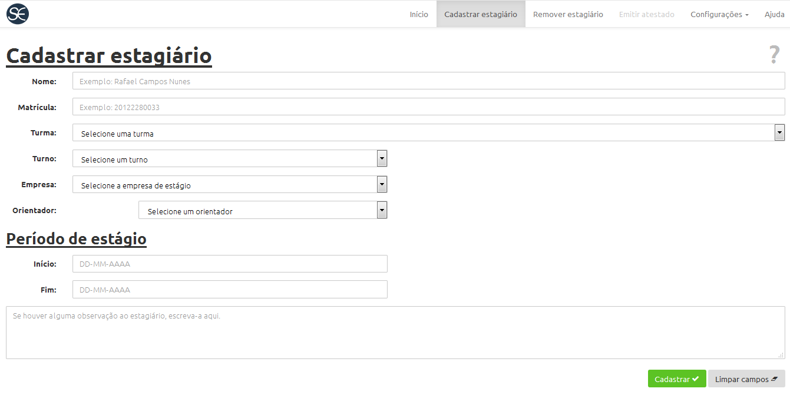
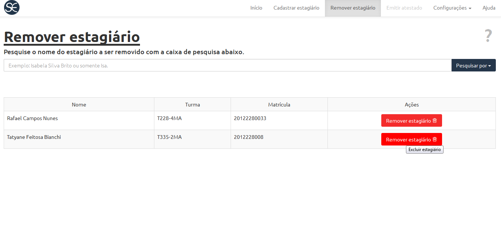
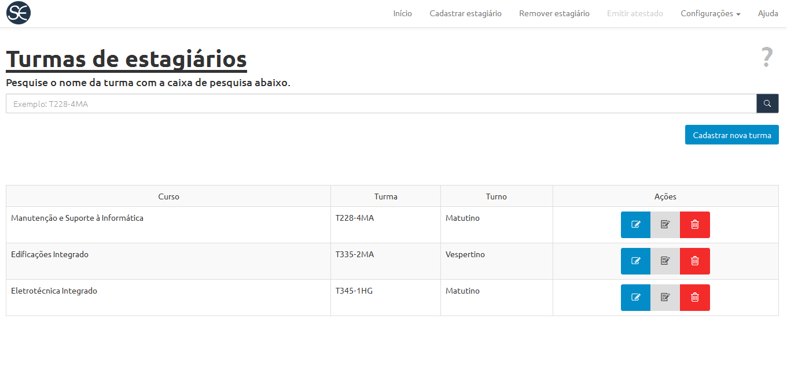
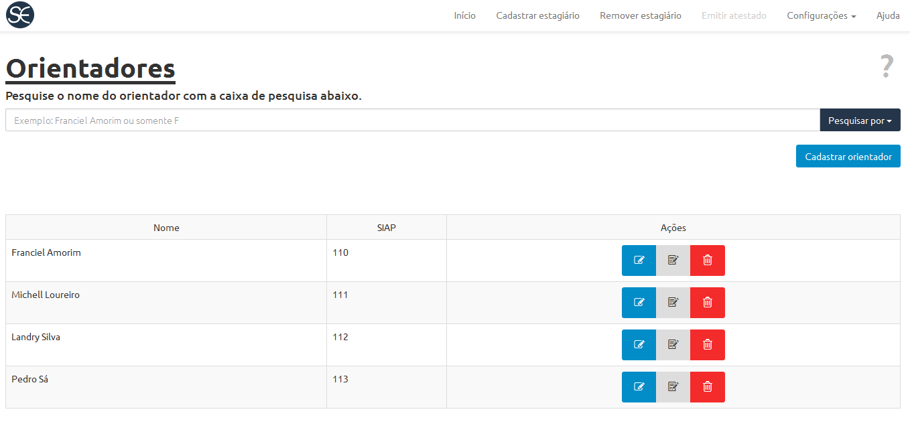
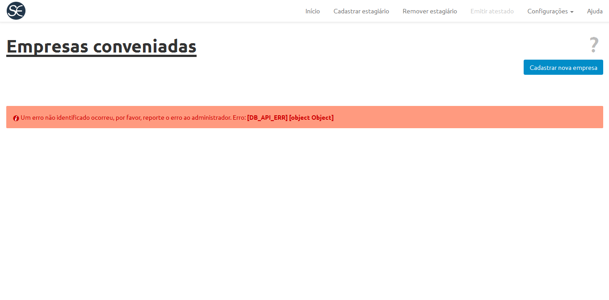
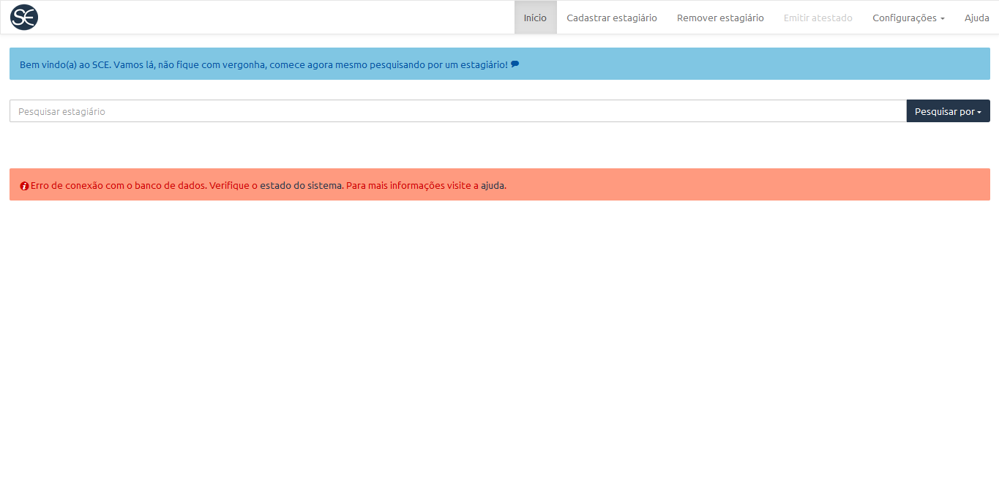

Olá, seja bem-vindo(a) a página de ajuda.
Aqui você encontrará soluções para suas dúvidas/problemas, utilize o menu a sua esquerda para navegar entre os tópicos de ajuda.
Por dentro da aplicação!
Este é um sistema voltado ao controle de estágios, a princípio foi projetado para ser utilizado no Instituto Federal de Educação, Ciência e Tecnologia do Pará - Campus Tucuruí, a fim de possibilitar o gerenciamento do cadastro de cada estagiário, classificando-os por turma ou por empresa conveniada, também é possível emitir o atestado de conclusão, portanto, por meio desta aplicação de fácil utilização é possível verificar quais alunos fazem estágio e emitir uma declaração de conclusão. É possível verificar as informações básicas e incluir observações sobre os estagiários e das empresas.
Compatibilidade entre browsers
O Sistema de Controle de Estágio é compatível com os seguintes browsers, ou seja, são os navegadores que possibilitam que a aplicação funcione de forma correta. Os devidos testes foram realizados, a fim de que não ocorram problemas de incompatibilidade.
- Mozilla Firefox (utilizando a versão 42.0)
- Google Chrome (utilizando a versão 46.0.2490.80)
- Microsoft Edge
- Internet Explorer (versões superiores a 11.0)
- Opera (utilizando a versão 32).
- Safari (versões superiores a 5.1.7)
O aplicativo não funciona corretamente utilizando Internet Explorer abaixo da versão. 11
O aplicativo não funciona corretamente utilizando a versão 5.1.7 do navegador Safari.
O Login
O sistema de autorização não está disponível na versão 1.0
Cadastro de estagiário
Para realizar o cadastro de um estagiário é necessário que a empresa na qual estagiário trabalha seja conveniada, ou seja, é necessário que ela esteja cadastrada no sistema. Os dados requisitados são:
- Nome
- Matricula
- Turma
- Turno
- Empresa
- Orientador
- Período de estágio
A interface é fácil de ser utilizada, é possível escolher o turno (vespertino, matutino, diurno e noturno), a empresa, o orientador e a turma. Vale ressaltar que esses ítens são previamente cadastrados no sistema, na aba configurações. Ao término do cadastro basta concluir clicando no botão "cadastrar", como está demonstrado na imagem a seguir.

Remoção de estagiário
Para remover um estagiário cadastrado é simples, basta pesquisar o nome do estagiário a ser removido na caixa de pesquisa que fica localizada abaixo. A imagem a seguir demonstra como é possível localizar um estagiário para removê-lo.

Emitir atestado de estágio
O sistema de emissão de estágio não está disponível na versão 1.0
Configurações
Em configurações temos algumas informações essenciais para realizar o cadrasto do estagiário, como a turma onde o mesmo estuda, a empresa onde o individuo estagiará e o professor orientador responsável pelo estagiário.
Turmas
O estagiário deve estar devidamente matriculado em uma turma, caso no sistema essa turma ainda não esteja cadastrada, deve-se realizar o cadastro, e para isso é muito simples, o usuário deve estar na página "turmas" (localizada em configurações no canto superior esquerdo da tela) clicar em "cadastrar nova turma" e preencher as segintes informações:
- Código da turma
- Nome do curso
- Turno de estudo da turma

Orientadores
O professor orientador é responsável por fazer o acompranhamento pedagógico do estágio, ele é designado pela instituição e aprova, acompanha, orienta e avalia as atividades de estágio. Por isso essa função é de extrema importância, tanto para o cadastro do estagiário quando para a formação do proficional. E para realizar o cadastro de um professor para ser orientador é necessário que o usuário esteja na página de "orientadores", dentro de configurações, e clicar em "cadastrar orientador". E não necessárias as segunites informações:
- Nome completo do orientador
- SIAP do professor

Empresas Conveniadas
Para cadastrar um estagiário é obrigatório inserir em qual empresa o mesmo atua, portanto, na opção “Empresas conveniadas” encontram-se as empresas conveniadas ao IFPA assim como uma forma de cadastrar uma nova empresa. As informações requisitadas para o cadastro de uma nova empresa são:
- Informações básicas
- Nome da empresa
- Razão social da empresa
- Cadastro Nacional da Pessoa Jurídica -CNPJ
- Endereço
- Nome da rua
- Número
- CEP
- Bairro
- Contato
- Telefones
Podemos observar a seguir, uma imagem mostrando a tela de cadastro de empresas

Erros de aplicação
Alguns erros nesta aplicação poderem ocorrer com facilidade, e estão listados alguns possivéis erros, com suas explicações, imagens detalhando o mesmo e suas possivéis soluções.
Erro 404
O erro 404 significa que o servidor não encontrou o arquivo requisitado pelo navegador, o arquivo pode não existir ou está digitado incorretamente no campo de texto do navegador. Para mais informações sobre o erro, siga este link.
A seguir, uma imagem que mostra a ocorrência do Erro 404

Erro Indefinido
Em ocorrência de um erro indefinido, é recomendado uma requisição para que o administrador adicione o erro no servidor do sistema, para reportar para o desenvolvedor. Para reportar o erro ultilize esse link. Podemos observar, a imagem abaixo, a mensagem de um erro indefinido:

Erro 1004
Este erro é definido no protocolo do SCE, é um código utilizado para representar o estado de uma requisição ao servidor.
Erro de conexão com o banco de dados
A conexão com o banco de dados foi recusada por alguma razão, acione o administrador do sistema para resolver o problema.

Erro de duplicação de chave primária
O erro E_DUP_ENTRY, é um erro de entrada duplicada de uma chave primaria, ou seja, foram encontrados duas informações (estagiários, empresas, orientadores) com o mesmo código de diferenciação (matricula, CNPJ, SIAP). O usuário deve perceber quais informações coincidem e modificar uma das chaves primarias. Aparecerá a seguinte mensagem de erro para o usuário